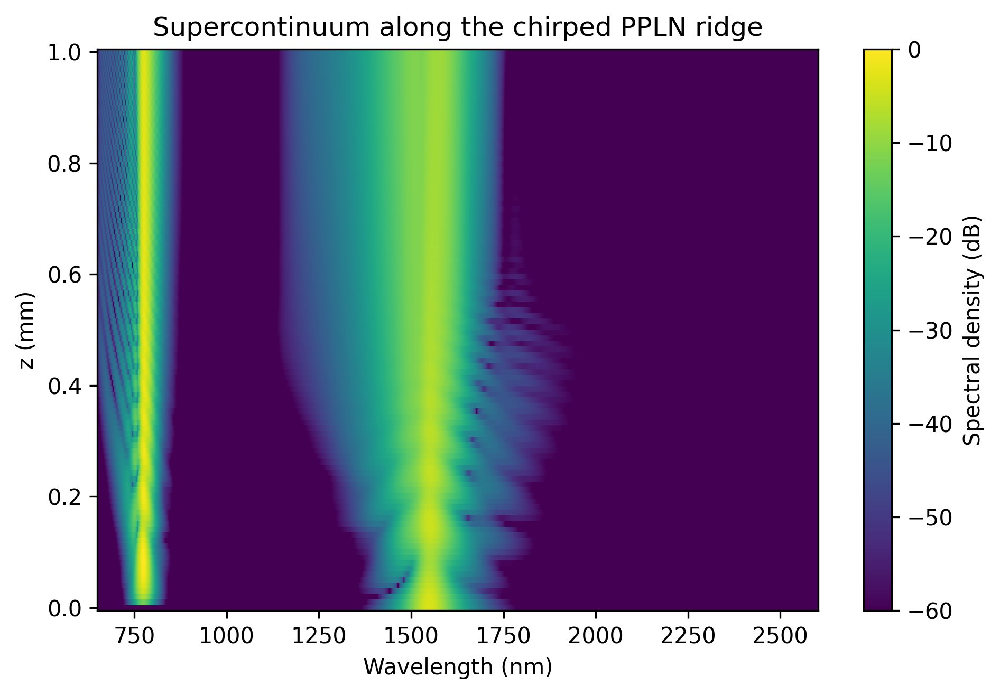
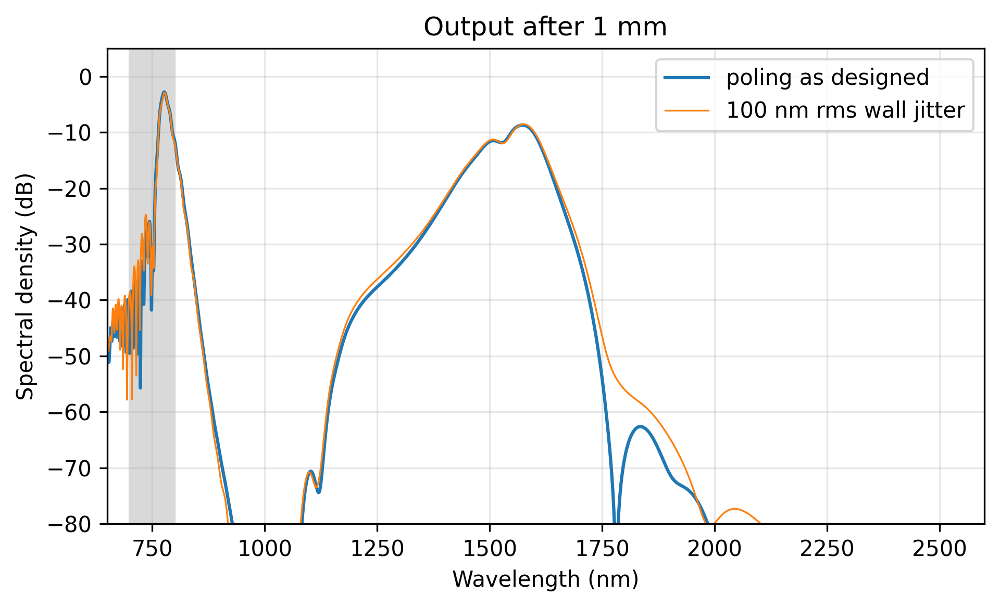

Nonlinear-EME: Supercontinuum
Highlighted features: a femtosecond PulsedSource, PulsedProcess with \(\chi^{(2)}\), Kerr and Raman taken from the materials, a chirped Poling, two tracked TE modes, band_energy and band_power of the output, and pulse_propagate to rerun with jittered domain walls without a mode solve.
This code example is licensed under the BSD 3-Clause License.
import sys
import time
import emodeconnection as emc
import numpy as np
from matplotlib import pyplot as plt
## Supercontinuum in chirped periodically poled thin-film lithium niobate.
## A 50 fs, 100 pJ pulse at 1550 nm is doubled and broadened by chi(2) and
## chi(3) together. The poling period is chirped from the SHG period at the
## input to a shorter one at the output, so the phase-matched wavelength
## sweeps toward the blue as the spectrum grows. The ridge is the one of the
## PPLN example.
## Set simulation parameters
center_wavelength = 1550.0 # [nm]
dx, dy = 20, 20 # [nm] resolution
w_core = 1600 # [nm] ridge top width
h_film, h_ridge = 600, 300 # [nm] LN film thickness and etch depth
h_box, h_clad = 2000, 1000 # [nm] SiO2 below and above
sidewall_angle = 15 # [deg] from vertical
length = 1e6 # [nm] 1 mm
duration = 50.0 # [fs] intensity FWHM
energy = 100.0 # [pJ]
repetition_rate = 100e6 # [Hz]
wavelength_range = (650.0, 2600.0) # [nm] the pulse's frequency grid
num_points = 2048 # frequency points (the time window is 5.9 ps)
chirp_ratio = 0.8 # output period over input period
## Two modes and three nonlinearities need many field patterns, and the Kerr
## term costs the fourth power of their number. Four keep the run to minutes.
max_rank = 4
window_width = w_core + 2 * 2000
window_height = h_box + h_film + h_clad
## theta = pi/2 puts the optic axis along simulation x: x-cut.
ln_x_cut = emc.MaterialSpec(material='LN_MgO', theta=np.pi / 2)
em = emc.EMode(emode_cmd=sys.argv[1:], simulation_name='ppln_sc', verbose=True)
def build_ridge(wavelength, num_modes, name):
"""The ridge at one wavelength, solved and labeled."""
em.settings(
wavelength=wavelength,
x_resolution=dx,
y_resolution=dy,
window_width=window_width,
window_height=window_height,
num_modes=num_modes,
background_material='SiO2',
)
em.shape(name='BOX', material='SiO2', height=h_box)
em.shape(
name='LN',
material=ln_x_cut,
fill_material='SiO2',
height=h_film,
mask=w_core,
etch_depth=h_ridge,
sidewall_angle=sidewall_angle,
)
em.shape(name='clad', material='SiO2', height=h_clad)
em.FDM()
em.label_profile(name=name)
def te_modes(profile, count):
"""The first `count` modes that are mostly TE, in eigenvalue order."""
n_eff = np.real(np.asarray(em.get('effective_index', profile=profile)))
te = np.asarray(em.get('TE_fraction', profile=profile))
picked = [i for i in range(len(n_eff)) if te[i] > 0.5][:count]
return picked, n_eff[picked]
## The two lowest TE modes at the pump are tracked through the whole band.
build_ridge(center_wavelength / 2, 6, 'sh')
(i_sh,), (n_sh,) = te_modes('sh', 1)
build_ridge(center_wavelength, 6, 'ridge')
tracked, n_pump = te_modes('ridge', 2)
print(f'tracked TE modes {tracked}, n_eff {n_pump[0]:.5f} and {n_pump[1]:.5f}')
## The SHG period from the fundamental TE modes, chirped toward the output.
beta_pump = 2 * np.pi * n_pump[0] / (center_wavelength * 1e-9)
beta_sh = 2 * np.pi * n_sh / (center_wavelength / 2 * 1e-9)
shg_period = 2 * np.pi / (beta_sh - 2 * beta_pump) * 1e9 # [nm]
poling = emc.Poling(z_knots=[0, length], periods=[shg_period, chirp_ratio * shg_period])
print(f'poling period: {shg_period * 1e-3:.4f} um to {chirp_ratio * shg_period * 1e-3:.4f} um')
em.straight_section(
name='ppln',
profile='ridge',
length=length,
nonlinear=emc.PulsedProcess(modes=tracked, poling=poling, max_rank=max_rank),
)
em.settings(
excitation=emc.PulsedSource(
center_wavelength=center_wavelength,
duration=duration,
energy=energy,
mode=tracked[0],
repetition_rate=repetition_rate,
wavelength_range=wavelength_range,
num_points=num_points,
)
)
start = time.perf_counter()
em.EME()
print(f'EME() with the pulse: {time.perf_counter() - start:.0f} s')
r = em.get('pulse_response')
print(f'field patterns: {r.rank_per_slice[0]}, propagation steps: {r.steps}')
band = (700.0, 800.0) # [nm]
print(f'output energy: {r.energy[-1].sum():.2f} pJ of {energy:.0f} pJ')
for mode in tracked:
print(f' in TE mode {mode}: {r.energy[-1][r.modes.index(mode)]:.3f} pJ')
print(
f'{band[0]:.0f}-{band[1]:.0f} nm: {r.band_energy(*band):.3f} pJ, '
f'{r.band_power(*band) * 1e3:.2f} mW average at {repetition_rate * 1e-6:.0f} MHz'
)
print(f'energy at the time window edges: {r.energy_outside_window():.1e}')
## The same chip with fabrication jitter on every domain wall: no mode solve.
start = time.perf_counter()
jittered = emc.Poling(
z_knots=[0, length],
periods=[shg_period, chirp_ratio * shg_period],
jitter_rms=100.0,
seed=1,
)
em.pulse_propagate(poling=jittered)
print(f'pulse_propagate() with jittered walls: {time.perf_counter() - start:.0f} s')
rj = em.get('pulse_response')
print(f'{band[0]:.0f}-{band[1]:.0f} nm with 100 nm rms wall jitter: {rj.band_energy(*band):.3f} pJ')
## Spectral map: the energy spectral density along the chip, both modes summed.
lam = r.wavelength
order = np.argsort(lam)
psd = np.array([r.psd(z=z) for z in r.z])[:, order]
fig, ax = plt.subplots(figsize=(6.5, 4.5))
mesh = ax.pcolormesh(
lam[order], np.asarray(r.z) * 1e-6, psd - psd.max(), vmin=-60, vmax=0, shading='auto'
)
fig.colorbar(mesh, ax=ax, label='Spectral density (dB)')
ax.set_xlabel('Wavelength (nm)')
ax.set_ylabel('z (mm)')
ax.set_title('Supercontinuum along the chirped PPLN ridge')
fig.tight_layout()
fig.savefig('ppln_supercontinuum_map.png', dpi=300, bbox_inches='tight')
## Output spectrum, with the 700-800 nm band shaded.
fig, ax = plt.subplots(figsize=(6.5, 4))
ax.plot(lam[order], r.psd()[order] - psd.max(), label='poling as designed')
ax.plot(lam[order], rj.psd()[order] - psd.max(), lw=0.8, label='100 nm rms wall jitter')
ax.axvspan(*band, color='0.85', zorder=0)
ax.set_xlim(*wavelength_range)
ax.set_ylim(-80, 5)
ax.set_xlabel('Wavelength (nm)')
ax.set_ylabel('Spectral density (dB)')
ax.set_title(f'Output after {length * 1e-6:.0f} mm')
ax.legend()
ax.grid(True, alpha=0.3)
fig.tight_layout()
fig.savefig('ppln_supercontinuum_output.png', dpi=300, bbox_inches='tight')
## Close EMode
em.close()
Console output:
EMode3D 1.0.6 - email
Meshing completed in 1.2 sec
Solving modes completed in 2.7 sec
Meshing completed in 1.2 sec
Solving modes completed in 2.2 sec
Solving S-matrices...
Solving section: ppln... completed in 0.0 sec
completed in 0.0 sec
Preparing the pulse chain...Meshing completed in 1.2 sec
Solving modes completed in 1.8 sec
Meshing completed in 1.2 sec
Solving modes completed in 2.2 sec
Meshing completed in 1.2 sec
Solving modes completed in 2.2 sec
Meshing completed in 1.2 sec
Solving modes completed in 2.4 sec
Meshing completed in 1.2 sec
Solving modes completed in 2.7 sec
Meshing completed in 1.2 sec
Solving modes completed in 2.5 sec
Meshing completed in 1.3 sec
Solving modes completed in 2.5 sec
Meshing completed in 1.2 sec
Solving modes completed in 2.3 sec
Meshing completed in 1.2 sec
Solving modes completed in 2.5 sec
Meshing completed in 1.2 sec
Solving modes completed in 2.3 sec
Meshing completed in 1.2 sec
Solving modes completed in 2.3 sec
Meshing completed in 1.2 sec
Solving modes completed in 2.2 sec
Meshing completed in 1.2 sec
Solving modes completed in 2.4 sec
Meshing completed in 1.2 sec
Solving modes completed in 2.2 sec
Meshing completed in 1.2 sec
Solving modes completed in 2.3 sec
Meshing completed in 1.2 sec
Solving modes completed in 2.6 sec
Meshing completed in 1.2 sec
Solving modes completed in 2.4 sec
Meshing completed in 1.2 sec
Solving modes completed in 2.6 sec
Meshing completed in 1.2 sec
Solving modes completed in 2.8 sec
Meshing completed in 1.2 sec
Solving modes completed in 2.1 sec
Meshing completed in 1.2 sec
Solving modes completed in 2.6 sec
Meshing completed in 1.2 sec
Solving modes completed in 2.7 sec
Meshing completed in 1.2 sec
Solving modes completed in 2.8 sec
Meshing completed in 1.2 sec
Solving modes completed in 2.3 sec
completed in 1 min 45.9 sec
Propagating the pulse... completed in 3 min 13.5 sec
Exited EMode
tracked TE modes [0, 2], n_eff 1.92271 and 1.82064
poling period: 4.4212 um to 3.5369 um
EME() with the pulse: 300 s
field patterns: 4, propagation steps: 2212
output energy: 99.90 pJ of 100 pJ
in TE mode 0: 99.900 pJ
in TE mode 2: 0.000 pJ
700-800 nm: 40.791 pJ, 4.08 mW average at 100 MHz
energy at the time window edges: 5.1e-09
pulse_propagate() with jittered walls: 194 s
700-800 nm with 100 nm rms wall jitter: 38.408 pJ
Figures:

